artMS: Analytical R Tools for Mass Spectrometry
David Jimenez-Morales
2026-11-17
Source:vignettes/artMS_vignette.Rmd
artMS_vignette.RmdOVERVIEW
artMS is a Bioconductor package that provides a set of tools for the analysis and integration of large-scale proteomics (mass-spectrometry-based) datasets obtained using the popular proteomics software MaxQuant.
The functions available in artMS can be grouped into the following categories:
- Multiple quality control (QC) functions.
- Relative quantification using MSstats.
- Downstream analysis and integration of quantification (enrichment, clustering, PCA, summary plots, etc)
- Generation of input files for other tools, including SAINTq, SAINTexpress, Photon, and Phosfate
Click here for details about all the functions available in artMS.
For a graphical overview check the slides presented at the 2021 online workshop of the Association of Biomolecular Resource Facilities (ABRF)
What’s new?
Check the repo NEWS file to be up to date with the new features, improvements, bug fixes affecting the package.
How to install
Bioconductor
artMS version >= 1.10.1 had many changes to adjust
for changes in MSstats. This version requires:
- Install
R version >= 4.1.0(check the R version running on your system by executing the functiongetRversion()) - Bioconductor:
BiocManager::install("BiocVersion") - artMS:
BiocManager::install("artMS") - If you are planning to use the
artmsAnalysisQuantifications()to perform a comprehensive downstream analysis of the quantitative results, then install the following packages:
# From bioconductor:
BiocManager::install(c("ComplexHeatmap", "org.Mm.eg.db"))
# From CRAN:
install.packages(c("factoextra", "FactoMineR", "gprofiler2", "PerformanceAnalytics"))Extra: Why Bioconductor? Here you can find a nice summary of many good reasons).
Development version from Github (unstable)
Assuming that you have an R (>= 4.1) version running
on your system, follow these steps:
install.packages("devtools")
library(devtools)
install_github("biodavidjm/artMS")Once installed, the package can be loaded and attached to your current workspace as follows:
## Input files
artMS performs the different analyses taking as input the following files:
- evidence.txt file: output of the quantitative proteomics software package MaxQuant.
- keys.txt (tab-delimited) txt file generated by the user describing the experimental design.
- contrast.txt (tab-delimited) txt file generated by the user with the comparisons between conditions to be quantified.
Check below to find out more about generating the input files.
Configuration file
artmsQuantification() requires a large number of
arguments, specially those related to the statistical package MSstats.
To facilite the task of providing all those arguments, the function
artmsQuantification() takes a config file (in
yaml format) for the customization of the parameters for
quantification (using MSstats) and other operations,
including QC analyses, charts, and annotations.
A configuration file template can be generated by running
artmsWriteConfigYamlFile()
Check below to learn the details of the configuration file.
Basic workflows
Proteomics
Generate the input files: Check the input files section for details
-
Quality Control: if you are interested in performing only quality control analysis, run the following functions:
-
artmsQualityControlEvidenceBasic(): QC based on theevidence.txtfile -
artmsQualityControlEvidenceExtended(): based on theevidence.txtfile -
artmsQualityControlSummaryExtended(): based on thesummary.txtfile
-
-
Relative Quantification: fill up the configuration file and run the following function:
-
artmsQuantification(yaml_config_file = "config.yaml")(here the details)
-
-
Analysis of Quantifications: performs annotations, clustering analysis, PCA analysis, enrichment analysis by running the function
Miscellaneous functions: Check below to discover more useful functions provided by the
artMSpackage.
Metabolomics (unstable)
artMS also
enables the relative quantification of untargeted polar metabolites
using the alignment table generated by MarkerView.
This means that the metabolites do not need to have an ID,
as the m/z and retention time will be used as
identifiers. Typical workflow:
Run QC on the metabolomics dataset:
artmsQualityControlMetabolomics()Relative quantification:
artmsQuantification()(notice that a few options must be changed in the config file before running the function)
Please, keep in mind that most of the functions available in artMS don’t work for metabolomics data due to annotation issues (protein/gene ids are the primary ids for most of the functions). Check the metabolomics section to find out more.
REQUIRED INPUT FILES
IMPORTANT
Before you begin, please, set the working directory. artMS will work from that working directory. For example:
setwd("/path/to/my/working_directory/project_proteomics/")Most of the artMS functions will create sub-folders to output files assuming that this working directory has been set and will try to find all the required files in this working directory.
Input files
Three basic (tab-delimited) files are required to perform the full pack of operations:
evidence.txt
The output of the quantitative proteomics software package MaxQuant. It combines all the information about the identified peptides.
keys.txt
Tab delimited file generated by the user. It summarizes the
experimental design of the evidence file. artMS merges the
keys.txt and evidence.txt by the “RawFile”
column. Each RawFile corresponds to a unique individual experimental
technical replicate / biological replicate / Condition / Run.
For any basic label-free proteomics experiment, the keys file must contain the following columns and rules:
- RawFile: The name of the RAW-file for which the mass spectral data was derived from.
-
IsotopeLabelType:
'L'for label free experiments ('H'will be used for SILAC experiments, see below) -
Condition: The conditions names must follow these
rules:
- Use only letters (A - Z, both uppercase and lowercase) and numbers
(0 - 9). The only special character allowed is underscore
(
_). - Very important: A condition name cannot begin with a number (R limitation).
- Use only letters (A - Z, both uppercase and lowercase) and numbers
(0 - 9). The only special character allowed is underscore
(
-
BioReplicate: biological replicate number. It is
based on the condition name. Use as prefix the corresponding
Conditionname, and add as suffixdash (-)plus the biological replicate number. For example, if conditionH1N1_06Hhas too biological replicates, name themH1N1_06H-1andH1N1_06H-2 - Run: a unique number for all the MS runs (from 1 to the total number of raw files). It will be especially useful when having technical replicates. For example, in the table below, there are 2 technical replicates of the same biological replicate (Cal_33-1, technical replicates 1 and 2). A special case is SILAC experiments (H and L label are run simultaneously. See below to find out more)
| RawFile | IsotopeLabelType | Condition | BioReplicate | Run |
|---|---|---|---|---|
| qx006145 | L | Cal_33 | Cal_33-1 | 1 |
| qx006146 | L | Cal_33 | Cal_33-2 | 2 |
| qx006151 | L | HSC6 | HSC6-1 | 3 |
| qx006152 | L | HSC6 | HSC6-2 | 4 |
For more examples, check the artMS data object
artms_data_ph_keys
Tip: it is recommended to use Microsoft Excel (OpenOffice Cal / or similar) to generate the keys file. Do not forget to choose the format = Tab Delimited Text (.txt) when saving the file (use save as option)
contrast.txt
The comparisons between conditions that the user wants to quantify.
- Example #1: the comparison for the keys described above would be:
HSC6-Cal_33- Example #2: let’s quantify changes in protein abundance between wild
type (
WT_A549) relative to two additional experimental conditions with drugs (WT_DRUG_AandWT_DRUG_B), but also changes in protein abundance betweenDRUG_AandDRUG_B, the contrast file would look like this:
WT_DRUG_A-WT_A549
WT_DRUG_B-WT_A549
WT_DRUG_A-WT_DRUG_BRequirements:
- The two conditions to be compared must be separated by a dash symbol
(
-), and only one dash symbol is allowed, i.e., only one comparison per line.
As a result of the quantification, the condition on the left will take the positive log2FC sign -if the protein is more abundant in condition on the left (numerator), and the condition on the right the negative log2FC -if a protein is more abundant in condition on the right term (denominator).
Example of wrong comparisons
Only condition names are allowed. Individual Bioreplicates cannot be compared. For example, this is wrong:
# WRONG:
HSC6-Cal_33-1The artMS configuration file
IMPORTANT
Before you begin, please, set the working directory. artMS will work from that working directory. For example:
setwd("/path/to/my/working_directory/project_proteomics/")Most of the artMS functions will create sub-folders to output files assuming that this working directory has been set and will try to find all the required files in this working directory.
The configuration file (in yaml format) contains a
variety of options available for the QC, quantification, and annotations
performed by artMS.
To generate a sample configuration file, go to the project folder
(setwd(/path/to/my/working_directory/project_proteomics/))
and execute:
library(artMS)
artmsWriteConfigYamlFile(config_file_name = "my_config.yaml")Open the my_config.yaml file with your favorite editor
(RStudio for example).
Note: Although the configuration file might look complex, the default options work very well.
The configuration (yaml) file contains the following
sections:
Section: files
Assuming that your working directory
(e.g. setwd(/path/to/my/working_directory/project_proteomics/))
has the following structure:
`-- data
|-- projectx-contrasts.txt
|-- projectx-evidence.txt
`-- projectx-keys.txtThe files section of the configuration file should look
like this:
files :
evidence : data/projectx-evidence.txt
keys : data/projectx-keys.txt
contrasts : data/projectx-contrast.txt
summary: data/projectx-summary.txt # Optional
output : results_folder/projectx--results.txt # this will be createdNotice that in this example all the input files are located in the
data/ folder, however, for the results file, an extra
folder has been added in the output section of the
configuration file example (results_folder): artMS will
create that folder structure (no need to create it before hand) and will
save the results files (and all the extra outputs) in that folder. This
means that you could write another completely different folder for the
output (e.g. “results_folder2/other-name-results.txt”) and
artMS will create the folder for you.
Section: qc
qc:
basic: 1 # 1 = yes; 0 = no
extended: 1 # 1 = yes; 0 = no
extendedSummary: 0 # 1 = yes; 0 = noSelect to perform both ‘basic’ and ‘extended’ quality control based
on the evidence.txt file or ‘extendedSummary’ based on the
summary.txt file. Read below
to find out more about the details of each type of analysis.
Section: data
data:
enabled : 1 # 1 = yes; 0 = no
silac:
enabled : 0 # 1 for SILAC experiments
filters:
enabled : 1
contaminants : 1
protein_groups : remove # remove, keep
modifications : AB # PH, UB, AC, AB, APMS
sample_plots : 1 # correlation plotsLet’s break it down data:
enabled : 1: to pre-process the data provided in the files section.0: won’t process the data (and a pre-generated MSstats file will be expected)-
silac:-
enabled : 1: check if the files belong to a SILAC experiment. See Special case: SILAC below for details -
enabled : 0: no silac experiment (default)
-
-
filters:-
enabled : 1Enables filtering (this section) -
contaminants : 1Removes contaminants (CON__andREV__labeled by MaxQuant). To keep contaminats:0 -
protein_groups : removechoose whetherremoveorkeepprotein groups -
modifications :select if a PTM proteomics experiment, i.e.:-
AB: Global protein abundant (default), i.e, no-modification -
PH,UB, orAC: shortcuts for the most frequent posttranslational modifications -
PTM:XXX:yy: User defined PTM, i.e. this is another way to select any PTM supported by MaxQuant, including the most frequent PTM. ReplaceXXXwith 1 or more 1-letter amino acid codes on which to find modifications (all uppercase). Replace yy with modification name used within the evidence file (require lowercase characters). Example for phosphorylation:PTM:STY:phwill find modifications on aa S,T,Y with this example format_AAGGAPS(ph)PPPPVR_. This means that you could use the shortcutmodifications: PHormodifications: PTM:STY:phand both would analyze phosphorylation peptides -
APMS: affinity purification mass-spectrometry
-
-
-
sample_plots-
1Generate correlation plots -
0otherwise
-
Section: msstats
Section updated in artMS version > 1.10.1. It allows the user to
customize all the arguments of the MSstats dataProcess
function for running the quantification. This new version of the
msstats section is fully compatible with the previous
version. However, we recommend to use the latest version of the
configuration file.
msstats :
enabled: 1
msstats_input:
profilePlots: none
normalization_method: equalizeMedians
normalization_reference:
summaryMethod: TMP
MBimpute: 1
feature_subset: all
n_top_feature: 3
logTrans: 2
remove_uninformative_feature_outlier: FALSE
min_feature_count: 2
equalFeatureVar: TRUE
censoredInt: NA
remove50missing: FALSE
fix_missing: NULL
maxQuantileforCensored: 0.999
use_log_file: TRUE
append: FALSE
log_file_path: NULLLet’s break down the most important arguments:
-
enabled :Choose1to run MSstats,0otherwise. -
msstats_input :leave it blank if MSstats will be run (previousenabled : 1). But if MSstats was already run and theevidence-mss.txtfile is available, then chooseenabled : 0and provide here theevidence-mss.txtfile path/name -
profilePlots :Choose one of the following options:-
beforeplot before normalization -
afterplot after normalization -
before-after: recommended, although computational expensive -
noneno normalization plots
-
-
normalization_method :available options:-
equalizeMedians(recommended) quantile-
FALSE: no normalization (not recommended) -
globalStandardsif selected, specified the reference protein innormalization_reference(next SECTION)
-
-
normalization_reference :provide a protein id if and only ifnormalization_method: globalStandardsis selected as thenormalization_method(above), otherwise leave blank. If multiple protein IDs are used for normalization, then provide them comma separated (for examplenormalization_reference: Q86U42, O75822) -
summaryMethod :TMP(default) means Tukey’s median polish, which is robust estimation method.linearuses linear mixed model.logOfSumconducts log2 (sum of intensities) per run. -
censoredInt :-
NA(default) Missing values are censored or at random. ‘NA’ assumes that all ‘NA’s in ’Intensity’ column are censored. -
0uses zero intensities as censored intensity. In this case, NA intensities are missing at random. The output from Skyline should use0. Null assumes that allNAintensities are randomly missing.
-
-
MBimpute :-
TRUEonly forsummaryMethod="TMP"andcensoredInt='NA'or0. TRUE (default) imputes ‘NA’ or ‘0’ (depending on censoredInt option) by Accelerated failure model. -
FALSEuses the values assigned by cutoffCensored.
-
For all the other parameters, please, check the documentation for the dataProcess function of MSstats.
Section: output_extras
enabled : 1 # if 0, won't process anything on this section
annotate :
enabled: 1
species : HUMAN
plots:
volcano: 1
heatmap: 1
LFC : -0.58 0.58 # Range of minimal log2fc
FDR : 0.05 # adjusted p-value, false discovery rate
heatmap_cluster_cols : 0
heatmap_display : log2FC # log2FC or pvalueExtra actions to perform based on the MSstats results, including annotations and plots (heatmaps and volcano plots). Let’s break it down:
-
enabled :1 (default) enables this section, 0 turns it off -
annotate :-
enabled: 1 (default), will generate a-results-annotated.txtfile that includesGeneandProtein.Name(only for supported species) -
species: The supported species are: HUMAN, MOUSE, ANOPHELES, ARABIDOPSIS, BOVINE, WORM, CANINE, FLY, ZEBRAFISH, ECOLI_STRAIN_K12, ECOLI_STRAIN_SAKAI, CHICKEN, RHESUS, MALARIA, CHIMP, RAT, YEAST, PIG, XENOPUS
-
-
plots :options for additional plots-
volcano :1 -
LFC :log2 fold change cutoff (minimal negative and positive value) -
FDR :false discovery rate cutoff for significance (recommended: 0.05) -
heatmap :correlation plots -
heatmap_cluster_cols :1 perfoms clustering of columns, 0 (default) doesn’t -
heatmap_display :choose to display eitherlog2FCorpvalue
-
Special case: Protein fractionation
To handle protein fractionation experiments, one additional column
“Fraction” must be added to the keys.txt file
with the information about fractions. For example:
| Raw.file | IsotopeLabelType | Condition | BioReplicate | Run | Fraction |
|---|---|---|---|---|---|
| S9524_Fx1 | L | AB | AB-1 | 1 | 1 |
| S9524_Fx2 | L | AB | AB-1 | 1 | 2 |
| S9524_Fx3 | L | AB | AB-1 | 1 | 3 |
| S9524_Fx4 | L | AB | AB-1 | 1 | 4 |
| S9524_Fx5 | L | AB | AB-1 | 1 | 5 |
| S9524_Fx6 | L | AB | AB-1 | 1 | 6 |
| S9524_Fx7 | L | AB | AB-1 | 1 | 7 |
| S9524_Fx8 | L | AB | AB-1 | 1 | 8 |
| S9524_Fx9 | L | AB | AB-1 | 1 | 9 |
| S9524_Fx10 | L | AB | AB-1 | 1 | 10 |
| S9525_Fx1 | L | AB | AB-2 | 2 | 1 |
| S9525_Fx2 | L | AB | AB-2 | 2 | 2 |
| S9525_Fx3 | L | AB | AB-2 | 2 | 3 |
| S9525_Fx4 | L | AB | AB-2 | 2 | 4 |
| S9525_Fx5 | L | AB | AB-2 | 2 | 5 |
| S9525_Fx6 | L | AB | AB-2 | 2 | 6 |
| S9525_Fx7 | L | AB | AB-2 | 2 | 7 |
| S9525_Fx8 | L | AB | AB-2 | 2 | 8 |
| S9525_Fx9 | L | AB | AB-2 | 2 | 9 |
| S9525_Fx10 | L | AB | AB-2 | 2 | 10 |
| S9526_Fx1 | L | AB | AB-3 | 3 | 1 |
| S9526_Fx2 | L | AB | AB-3 | 3 | 2 |
| S9526_Fx3 | L | AB | AB-3 | 3 | 3 |
| S9526_Fx4 | L | AB | AB-3 | 3 | 4 |
| S9526_Fx5 | L | AB | AB-3 | 3 | 5 |
| S9526_Fx6 | L | AB | AB-3 | 3 | 6 |
| S9526_Fx7 | L | AB | AB-3 | 3 | 7 |
| S9526_Fx8 | L | AB | AB-3 | 3 | 8 |
| S9526_Fx9 | L | AB | AB-3 | 3 | 9 |
| S9526_Fx10 | L | AB | AB-3 | 3 | 10 |
Deprecated: In previous versions of artMS (v <= 1.9), the
config.yaml file contained an additional fractions
section that had to be activated as follow:
fractions:
enabled : 1 # 1 for protein fractions, 0 otherwiseThis option is not longer required, as artMS will use the
“Fraction” of the keys file to detect that multiple
fractions are available.
Special case: SILAC
One of the most widely used techniques that enable relative protein
quantification is stable isotope labeling by amino acids in cell
culture (SILAC). The keys.txt file can capture the
typical SILAC experiment. The following example shows a SILAC experiment
with two conditions, two biological replicates, and two technical
replicates:
| RawFile | IsotopeLabelType | Condition | BioReplicate | Run |
|---|---|---|---|---|
| QE20140321-01 | H | iso | iso-1 | 1 |
| QE20140321-02 | H | iso | iso-1 | 2 |
| QE20140321-04 | L | iso | iso-2 | 3 |
| QE20140321-05 | L | iso | iso-2 | 4 |
| QE20140321-01 | L | iso_M | iso_M-1 | 1 |
| QE20140321-02 | L | iso_M | iso_M-1 | 2 |
| QE20140321-04 | H | iso_M | iso_M-2 | 3 |
| QE20140321-05 | H | iso_M | iso_M-2 | 4 |
It is also required to activate the silac option in the yaml file as follows:
silac:
enabled : 1 # 1 for SILAC experimentsQUALITY CONTROL
artMS provides 3 functions to perform QC analyses.
Basic QC (evidence.txt-based)
The basic quality control analysis takes as input both the
evidence.txt and keys.txt files
and generates several QC plots exploring different aspects of the MS
data. Run it as follows:
artmsQualityControlEvidenceBasic(
evidence_file = artms_data_ph_evidence,
keys_file = artms_data_ph_keys,
prot_exp = "PH")The following pdf can be generated:
- plotCORMAT (qcBasic_evidence.qcplot.CorrelationMatrix.pdf) (default): Correlation matrix for technical replicates (if available), biological replicates, and conditions based on MS Intensity values
- plotCORMAT (qcBasic_evidence.qcplot.CorrelationMatrixCluster.pdf (default): Clustered version of the Correlation matrices as for .CorrelationMatrix.pdf
-
plotINTMISC
(qcBasic_evidence.qcplot.IntensityStats.pdf): several pages,
including bar plots of Total Sum of Intensities in
BioReplicates, Total Sum of Intensities in Conditions,
Total Peptide Counts in BioReplicates,
Total Peptide Counts in conditions grouped by categories (CON: contaminants,PROTpeptides,REVreversed sequences used by MaxQuant to estimate the FDR); Box plots of MS Intensity values per biological replicates and conditions; bar plots of total intensity (excluding contaminants) by bioreplicates and conditions; Bar plots of total feature counts by bioreplicates and conditions. -
plotPTMSTATS
(qcBasic_evidence.qcplot.PTMStats.pdf): If any PTM is selected
(
PH,UB,AC,PTM:##) an extra pdf file will be generated with stats related to the selected modification, including: *bar plot of peptide counts and intensities*, broken byPTM/other` categories; bar plots of total sum-up of MS intensity values by other/PTM categories. - plotREPRO (qcBasic_evidence.qcplot.BasicReproducibility): correlation dot plot for all the combinations of biological replicates of every condition, based on MS Intensity values of features (peptide+charge)
- plotINTDIST (qcBasic_evidence.qcplot.IntensityDistributions.pdf): 2 pages. Box-dot plot and Jitter plot of MS (raw) intensity values for each biological replicate.
Check ?artmsQualityControlEvidenceBasic() to find out
more options. Remember: by default, all the plots are printed to a
pdf file by running:
artmsQualityControlEvidenceBasic(
evidence_file = artms_data_ph_evidence,
keys_file = artms_data_ph_keys,
prot_exp = "PH",
plotPTMSTATS = TRUE,
plotINTDIST = FALSE, plotREPRO = FALSE,
plotCORMAT = FALSE, plotINTMISC = FALSE,
printPDF = FALSE, verbose = FALSE)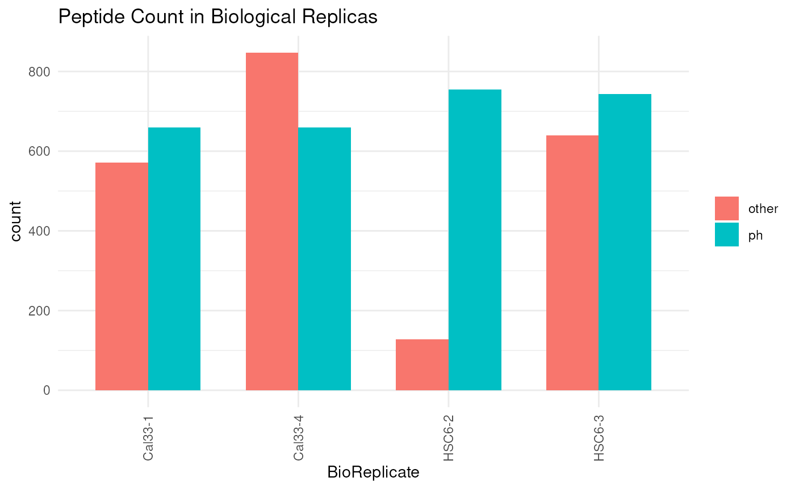
## Warning: The dot-dot notation (`..prop..`) was deprecated in ggplot2 3.4.0.
## ℹ Please use `after_stat(prop)` instead.
## ℹ The deprecated feature was likely used in the artMS package.
## Please report the issue at <https://github.com/biodavidjm/artMS/issues>.
## This warning is displayed once per session.
## Call `lifecycle::last_lifecycle_warnings()` to see where this warning was generated.## Warning: The following aesthetics were dropped during statistical transformation: fill.
## ℹ This can happen when ggplot fails to infer the correct grouping structure in the data.
## ℹ Did you forget to specify a `group` aesthetic or to convert a numerical variable into a factor?
## The following aesthetics were dropped during statistical transformation: fill.
## ℹ This can happen when ggplot fails to infer the correct grouping structure in the data.
## ℹ Did you forget to specify a `group` aesthetic or to convert a numerical variable into a factor?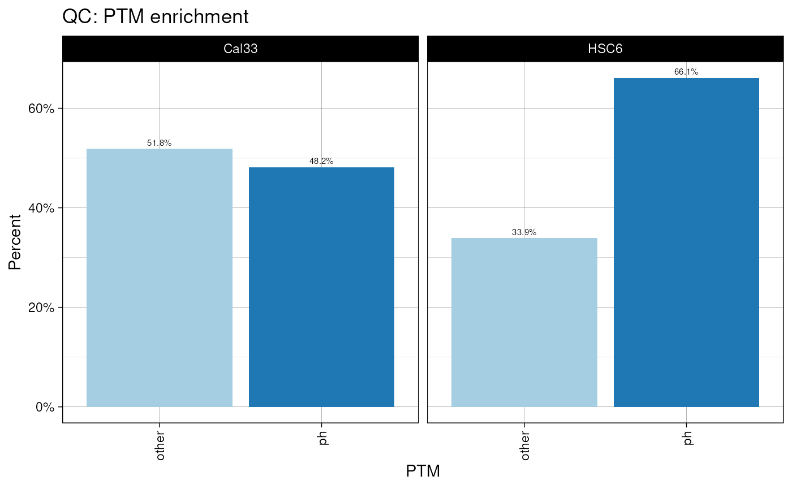
## Warning: The following aesthetics were dropped during statistical transformation: fill.
## ℹ This can happen when ggplot fails to infer the correct grouping structure in the data.
## ℹ Did you forget to specify a `group` aesthetic or to convert a numerical variable into a factor?
## The following aesthetics were dropped during statistical transformation: fill.
## ℹ This can happen when ggplot fails to infer the correct grouping structure in the data.
## ℹ Did you forget to specify a `group` aesthetic or to convert a numerical variable into a factor?
## The following aesthetics were dropped during statistical transformation: fill.
## ℹ This can happen when ggplot fails to infer the correct grouping structure in the data.
## ℹ Did you forget to specify a `group` aesthetic or to convert a numerical variable into a factor?
## The following aesthetics were dropped during statistical transformation: fill.
## ℹ This can happen when ggplot fails to infer the correct grouping structure in the data.
## ℹ Did you forget to specify a `group` aesthetic or to convert a numerical variable into a factor?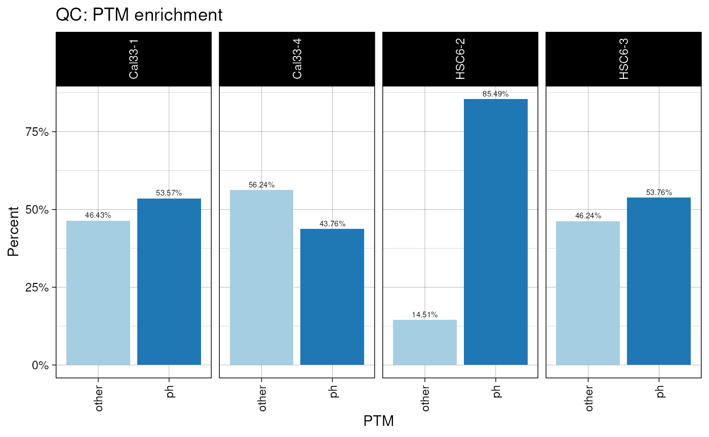
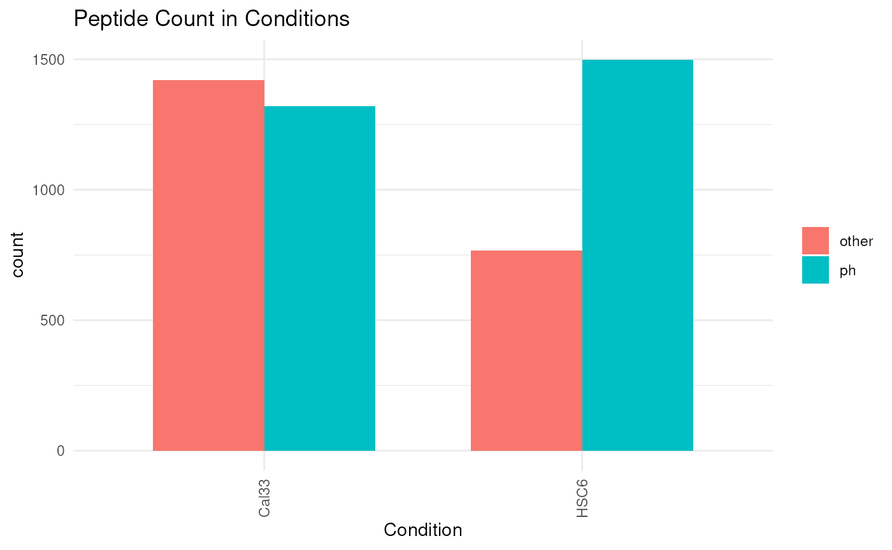
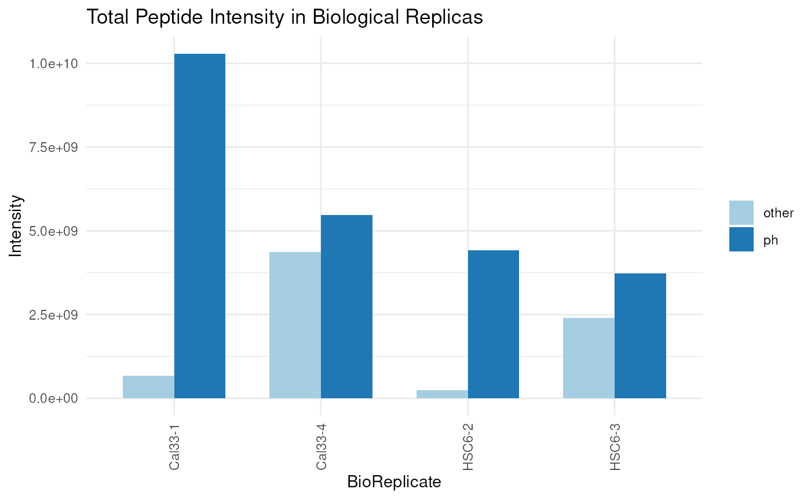
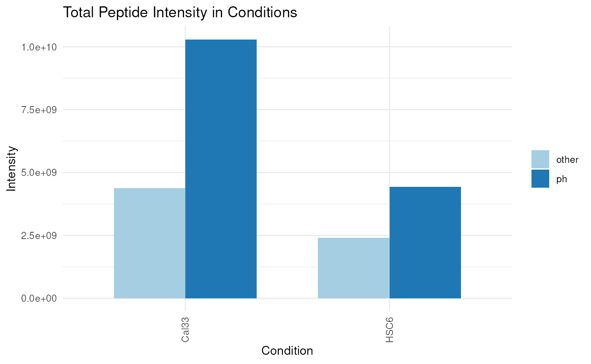
Extended QC (evidence.txt-based)
It takes as input the
evidence.txt and keys.txt files as
follows:
artmsQualityControlEvidenceExtended(
evidence_file = artms_data_ph_evidence,
keys_file = artms_data_ph_keys)and generates the following QC plots:
plotCS (qcExtended_evidence.qcplot.ChargeState): charge state distribution of PSMs confidently identified in each BioReplicate.
-
plotIC (qcExtended_evidence.qcplot.PCA.pdf): pairwise intensity correlation and Principal Component Analysis (PCA)
- Page 1 and 3: pairwise peptide and protein intensity correlation and scatter plot between any 2 BioReplicates, respectively.
- Page 2 and 4: principal component analysis at the intensity level for both peptide and proteins, respectively.
-
plotIONS (qcExtended_evidence.qcplot.Ions.pdf): A peptide ion is defined in the context of m/z, in other words, a unique peptide sequence may give rise to multiple ions with different charge state and/or amino acid modification.
- Page 1: number of ions confidently identified in each BioReplicate (top panel: non-contaminants, bottom: contaminants)
- Page 2: mean number of peptide ions per condition with error bar showing the standard error of the mean (categories: non-contaminants / contaminants)
plotME (qcExtended_evidence.qcplot.MassError.pdf): Distribution of precursor error for all PSMs confidently identified in each BioReplicate.
plotMOCD (qcExtended_evidence.qcplot.MZ.pdf): Distribution of precursor mass-over-charge for all PSMs confidently identified in each BioReplicate.
-
plotPIO (qcExtended_evidence.qcplot.PepIonOversampling.pdf):
- Page 1: proportion of all peptide ions (including peptides matched across runs) fragmented once, twice and thrice or more.
- Page 2: proportion of peptide ions (with intensity detected) fragmented once, twice and thrice or more.
- Page 3: proportion of peptide ions (with intensity detected and MS/MS identification) fragmented once, twice, and 3 or more
plotPEPDETECT (qcExtended_evidence.qcplot.PeptideDetection.pdf): frequency of peptide detection across BioReplicates by condition, showing the percentage of peptides detected once, twice, thrice, and so on (based on the number of bioreplicates for each condition).
-
plotPEPICV (qcExtended_evidence.qcplot.PeptideIntensity.pdf): Peptide intensity coefficient of variance (CV) plot.
The CV is calculated for each feature (peptide ion) identified in more than one replicate.- Page 1 shows the distribution of CV’s for each condition, while
- Page 2 shows the distribution of CV’s within 4 bins of intensity (i.e., 4 quantiles of average intensity).
-
plotPEPTIDES (qcExtended_evidence.qcplot.Peptides.pdf): peptide statistics plot.
- Page 1: number of unique peptide sequences (disregards the charge state or amino acid modifications) confidently identified in each BioReplicate (top panel: non-contaminants, bottom: contaminants)
- Page 2: mean number of peptides per condition with error bar showing the standard error of the mean.
plotPEPTOVERLAP (qcExtended_evidence..qcplot.PeptidesOverlap.pdf): peptide overlaps across bioreplicates (page 1) and conditions (page 2)
-
plotPROTDETECT (qcExtended_evidence.qcplot.ProteinDetection.pdf): Protein detection frequency plot:
- Page 1: protein group frequency of detection across BioReplicates for each condition, showing the percentage of proteins detected per bioreplicates
- Page 2: feature (peptide ion) intensity distribution within each BioReplicate (potential contaminant proteins are plot separately).
- Page 3: density of feature intensity for different feature types (i.e., MULTI-MSMS, MULTI-SECPEP).
-
plotPROTICV (qcExtended_evidence.qcplot.ProteinIntensityCV.pdf): protein intensity coefficient of variance (CV) plot. The CV is calculated for each protein (after summing the peptide intensities) identified in more than one replicate.
- Page 1: istribution of CV’s for each condition
- Page 2: distribution of CV’s within 4 bins of intensity (i.e., 4 quantiles of average intensity).
-
plotPROTEINS (qcExtended_evidence.qcplot.Proteins.pdf): protein statistics,
- Page 1: number of protein groups confidently identified in each BioReplicate.
- Page 2: mean number of protein groups per condition with error bar showing the standard error of the mean (categories: non-contaminants / contaminants)
plotPROTOVERLAP (qcExtended_evidence..qcplot.ProteinOverlap.pdf): Protein overlap across bioreplicates (page 1) and conditions (page 2)
-
plotPSM (qcExtended_evidence.qcplot.PSM.pdf) : Peptide-spectrum-matches (PSMs).
- Page 1: number of PSMs confidently identified in each BioReplicate.
- Page 2: mean number of PSMs per condition with error bar showing the standard error of the mean (categories: non-contaminants / contaminants)
-
plotIDoverlap (qcExtended_evidence.qcplot.ID-Overlap.pdf): heatmap of pairwise identification overlap:
- Page 1: peptide identification overlap, only peptides detected and identified between any 2 BioReplicates
- Page 2: protein identification overlap, only proteins with at least 1 peptide detected and identified between any 2 BioReplicates
-
plotSP (qcExtended_evidence.qcplot.SamplePrep.pdf): sample quality metrics.
- Page 1: missing cleavage distribution of all peptides confidently identified in each BioReplicate.
- Page 2: fraction of peptides with at least one methionine oxidized in each BioReplicate.
plotTYPE (qcExtended_evidence.qcplot.Type.pdf): identification type. MaxQuant classifies each peptide identification into different categories (e.g., MSMS, MULTI-MSMS, MULTI-SECPEP). This plot shows the distribution of identification type in each BioReplicate
Examples: printing plotTYPE, plotPEPICV,
and plotPCA plots only:
artmsQualityControlEvidenceExtended(
evidence_file = artms_data_ph_evidence,
keys_file = artms_data_ph_keys,
plotPCA = TRUE,
plotTYPE = TRUE,
plotPEPTIDES = TRUE,
plotPSM = FALSE,
plotIONS = FALSE,
plotPEPTOVERLAP = FALSE,
plotPROTEINS = FALSE,
plotPROTOVERLAP = FALSE,
plotPIO = FALSE,
plotCS = FALSE,
plotME = FALSE,
plotMOCD = FALSE,
plotPEPICV = FALSE,
plotPEPDETECT = FALSE,
plotPROTICV = FALSE,
plotPROTDETECT = FALSE,
plotIDoverlap = FALSE,
plotSP = FALSE,
printPDF = FALSE,
verbose = FALSE)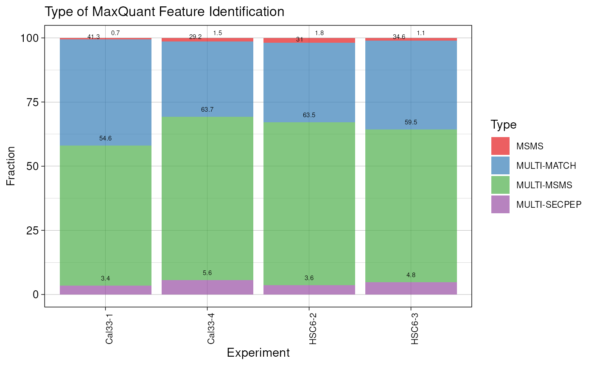
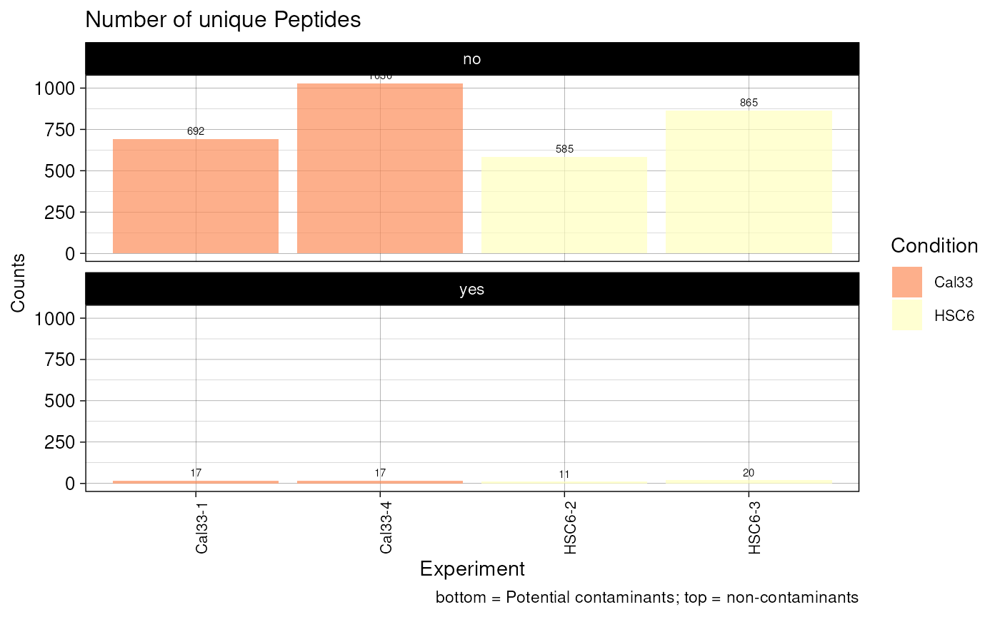
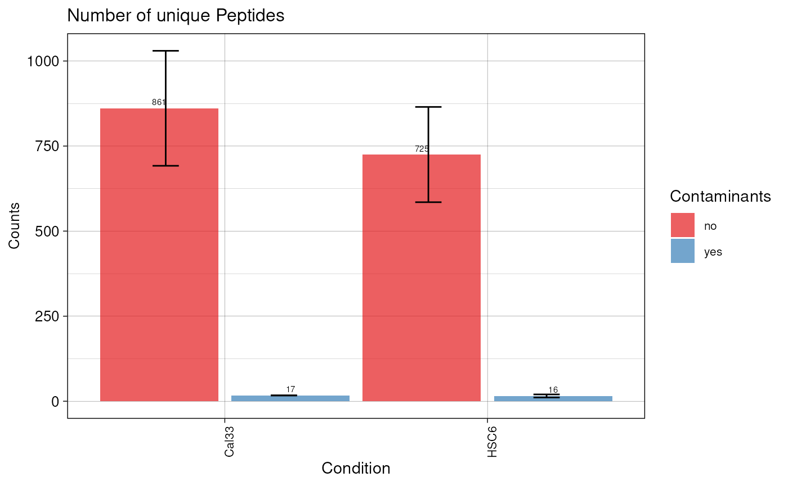
## Warning in par(usr): argument 1 does not name a graphical parameter
## Warning in par(usr): argument 1 does not name a graphical parameter
## Warning in par(usr): argument 1 does not name a graphical parameter
## Warning in par(usr): argument 1 does not name a graphical parameter
## Warning in par(usr): argument 1 does not name a graphical parameter
## Warning in par(usr): argument 1 does not name a graphical parameter
## Warning in par(usr): argument 1 does not name a graphical parameter
## Warning in par(usr): argument 1 does not name a graphical parameter
## Warning in par(usr): argument 1 does not name a graphical parameter
## Warning in par(usr): argument 1 does not name a graphical parameter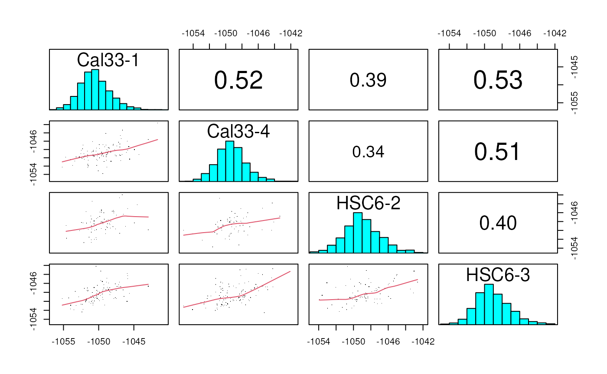
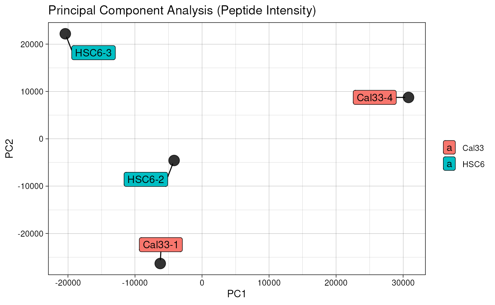
## Warning in par(usr): argument 1 does not name a graphical parameter
## Warning in par(usr): argument 1 does not name a graphical parameter
## Warning in par(usr): argument 1 does not name a graphical parameter
## Warning in par(usr): argument 1 does not name a graphical parameter
## Warning in par(usr): argument 1 does not name a graphical parameter
## Warning in par(usr): argument 1 does not name a graphical parameter
## Warning in par(usr): argument 1 does not name a graphical parameter
## Warning in par(usr): argument 1 does not name a graphical parameter
## Warning in par(usr): argument 1 does not name a graphical parameter
## Warning in par(usr): argument 1 does not name a graphical parameter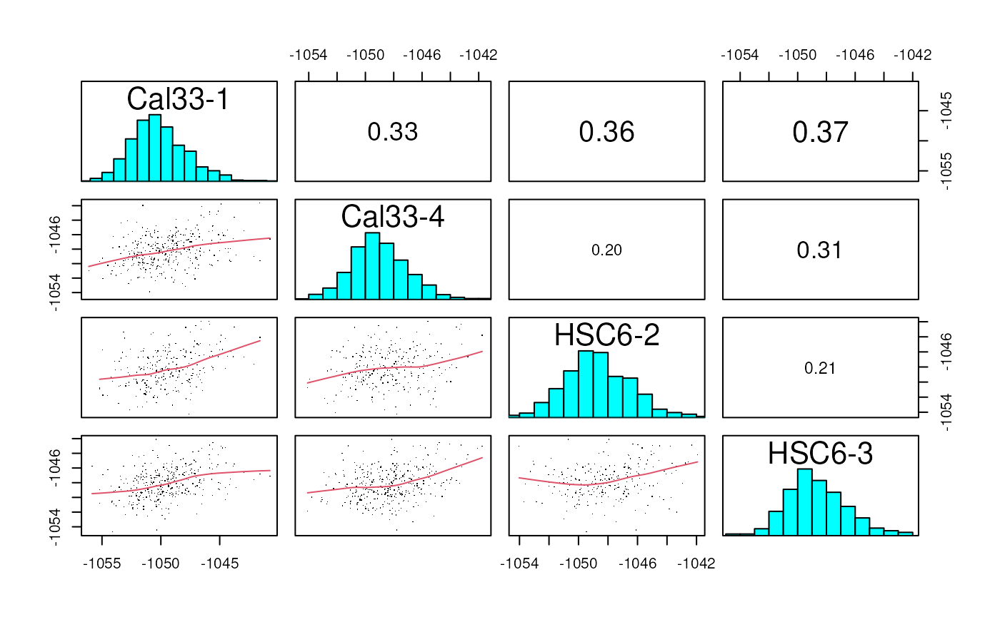
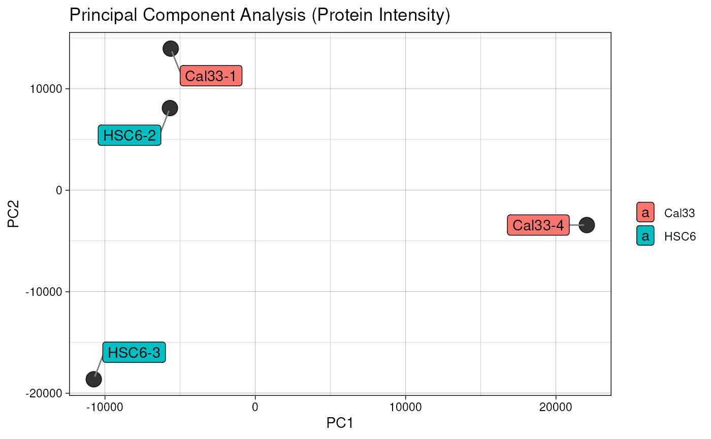
Extended QC (summary.txt based)
It requires two files:
- keys.txt file
- MaxQuant
summary.txtfile. As described by MaxQuant’stable.pdf, the summary file contains summary information for all the raw files processed with a single MaxQuant run, including statistics on the peak detection. The QC analysis of this file gathers a quick overview on the quality of every RawFile based on thissummary.txt. Run it as follows:
artmsQualityControlSummaryExtended(summary_file = "summary.txt",
keys_file = artms_data_ph_keys)It generates the following pdf plots:
plotMS1SCANS (.qcplot.MS1scans.pdf): generates MS1 scan counts plot: Page 1 shows the number of MS1 scans in each BioReplicate. If replicates are present, Page 2 shows the mean number of MS1 scans per condition with error bar showing the standard error of the mean. If
isFractionsisTRUE, each fraction is a stack on the individual bar graphs.plotMS2 (.qcplot.MS2scans.pdf): generates MS2 scan counts plot: Page 1 shows the number of MSs scans in each BioReplicate. If replicates are present, Page 2 shows the mean number of MS1 scans per condition with error bar showing the standard error of the mean. If
isFractionsisTRUE, each fraction is a stack on the individual bar graphs.plotMSMS (.qcplot.MSMS.pdf): generates MS2 identification rate (%) plot: Page 1 shows the fraction of MS2 scans confidently identified in each BioReplicate. If replicates are present, Page 2 shows the mean rate of MS2 scans confidently identified per condition with error bar showing the standard error of the mean. If
isFractionsTRUE, each fraction is a stack on the individual bar graphs.plotISOTOPE (.qcplot.Isotope.pdf): generates Isotope Pattern counts plot: Page 1 shows the number of Isotope Patterns with charge greater than 1 in each BioReplicate. If replicates are present, Page 2 shows the mean number of Isotope Patterns with charge greater than 1 per condition with error bar showing the standard error of the mean. If
isFractionsTRUE, each fraction is a stack on the individual bar graphs.
RELATIVE QUANTIFICATION
The relative quantification is a fundamental step in the analysis of
MS data. artMS facilitates and simplifies the analysis
using MSstats, a fantastic statistical
package for the relative quantification of Mass-Spectrometry based
proteomics.
All the options and parameters required to run a relative
quantification analysis using MSstats (in addition to other
options) are summarized in artMS through a configuration
file in .yaml format. Check the input-files section to find out more about each
of the options.
Different types of proteomics experiments can be quantified including changes in global protein abundance (AB), affinity purification mass spectrometry (APMS), and different type of posttranslational modifications, including phosphorylation (PH), ubiquitination (UB), and acetylation (AC).
artMS also enables the relative quantification of
untargeted polar metabolites using the alignment table generated by MarkerView.
This means that artMS does not require an ID for the
metabolites, as the m/z and retention time will be combined and used as
identifiers.
Quantification of Changes in Global Protein Abundance
The quantification of changes in protein abundance between different conditions requires to fill up the following sections of the config file:
files:
evidence : /path/to/the/evidence.txt
keys : /path/to/the/keys.txt
contrasts : /path/to/the/contrast.txt
output : /path/to/the/output/results_ptm_global/results.txt
.
.
.
data:
.
.
.
filters:
modifications : AB The remaining options can be left unmodified (and run the default
parameters). Then run the following artMS function:
artmsQuantification(
yaml_config_file = '/path/to/config/file/artms_ab_config.yaml')Quantification of Changes in Global Phosphorylation, Ubiquitination, Acetylation (or any PTM)
Warning: This quantification is only possible for experiments that have used methods to enrich for the modified peptides (e.g. phosphorylation) prior to the mass spectrometry analysis.
The global PTM quantification analysis calculates changes of the PTM at the protein level. This means that all the modified peptides for every protein are used to quantify changes in protein phosphorylation, ubiquitination, or acetylation between different conditions. The site-specific analysis (explained next) would quantify changes at the site level, i.e., each modified peptide for every PTM site is / are quantified independently between the different conditions (one or more different peptides could be detected for the same PTM)
Only two sections need to be filled up using the default configuration file:
files:
evidence : /path/to/the/evidence.txt
keys : /path/to/the/keys.txt
contrasts : /path/to/the/contrast.txt
output : /path/to/the/output/results_ptm_global/results.txt
.
.
.
data:
.
.
.
filters:
modifications : PHThe remaining options can be left unmodified.
Once the configuration yaml file is ready, run the
following command:
artmsQuantification(
yaml_config_file = '/path/to/config/file/artms_phglobal_config.yaml')PTM-Site/Peptide-specific Quantification of Changes (PH, UB, AC)
Warning: This quantification is only possible for experiments that have used methods to enrich phosphopeptides or ubiquitinated peptides prior to the mass spectrometry analysis.
Abbreviations:
-
PH= Protein phosphorylation -
UB= Protein Ubiquitination -
AC= Protein Acetylation -
PTM:XXX:yy: User defined PTM (any PTM supported by MaxQuant). Replace XXX with 1 or more 1-letter amino acid codes on which to find modifications (all uppercase). Replace yy with modification name used within the evidence file (require lowercase characters). Example:PTM:STY:phwill find modifications on aa S,T,Y with this example format_AAGGAPS(ph)PPPPVR_
The site-specific analysis quantifies changes at the
modified peptide level. This means that changes in every modified (PH,
UB, AC, or PTM) peptide of a given protein will be quantified
individually. The caveat is that the proportion of missing values should
increase in general relative to a typical non-PTM
global analysis (protein global abundance
quantification). Both sites and global
ptm analysis are highly correlated due to the usually only one or two
peptides drive the overall changes in PTMs for every protein.
To run a site/peptide specific analysis follow these steps:
-
Important pre-processing step on the evidence file to enable
the ptm-site/peptide-specific analysis. This step takes any of
the Proteins id columns selected by the user (either
Leading razor protein,Leading protein, orProteins) and re-annotates it to incorporate the ptm-site/peptide-specific information. By default, this function converts the columnLeading razor protein. This step is computational expensive, which means that it might take several minutes to finish (depending on the size of the fasta database, evidence file, computer power, etc)
It also requires the same reference proteome (fasta sequence database) used for the MaxQuant search.
For phosphorylation:
artmsProtein2SiteConversion(
evidence_file = "/path/to/the/evidence.txt",
ref_proteome_file = "/path/to/the/reference_proteome.fasta",
output_file = "/path/to/the/output/ph-sites-evidence.txt",
mod_type = "PH")As a result, the IDs in the “Leading razor protein” column will contain site/peptide-specific notation. For example:
Before: P12345 After: P12345_S23_S45
For ubiquitination:
artmsProtein2SiteConversion(
evidence_file = "/path/to/the/evidence.txt",
ref_proteome_file = "/path/to/the/reference_proteome.fasta",
output_file = "/path/to/the/output/ub-sites-evidence.txt",
mod_type = "UB")For acetylation:
artmsProtein2SiteConversion(
evidence_file = "/path/to/the/evidence.txt",
ref_proteome_file = "/path/to/the/reference_proteome.fasta",
output_file = "/path/to/the/output/ac-sites-evidence.txt",
mod_type = "AC")For all PTMS supported by MaxQuant (in addition to PH, AC, UB):
Example with PH and UB:
# Phosphopeptide in evidence file: `_AAGGAPS(ph)PPPPVR_`
artmsProtein2SiteConversion(
evidence_file = "/path/to/the/evidence.txt",
ref_proteome_file = "/path/to/the/reference_proteome.fasta",
output_file = "/path/to/the/output/ac-sites-evidence.txt",
mod_type = "PTM:STY:(ph)")
# Ubiquitinated peptide: `_AAASK(gl)LGEFAK_`
artmsProtein2SiteConversion(
evidence_file = "/path/to/the/evidence.txt",
ref_proteome_file = "/path/to/the/reference_proteome.fasta",
output_file = "/path/to/the/output/ac-sites-evidence.txt",
mod_type = "PTM:K:(gl)")Tip: How to re-annotate all the Protein columns on the same file.
By default, artmsProtein2SiteConversion doesn’t allow to
overwrite the evidence.txt file for security reasons (you
don’t want to lose the evidence file if something goes wrong). To
overwrite the evidence file the argument overwrite_evidence
must be turned on (overwrite_evidence = TRUE).
If the column_name argument is not used,
artmsProtein2SiteConversion converts the
Leading razor protein column, which is used in the
quantification step when protein_groups : remove is
selected (default). However, if protein_groups : keep is
used, artMS will use the Proteins column. To
convert the Proteins column to the site/peptide-specific
notation, then add the argument
column_name = "Proteins".
To annotate both columns of the same file, first generate the
“site-evidence.txt” file, and then use this same output file as the
evidence_file and activate
overwrite.evidence = TRUE.
In summary, to annotate both the “Leading razor protein” and
Proteins columns follow these steps:
# Convert 'Leading razor protein' evidence's file column
artmsProtein2SiteConversion(
evidence_file = "/path/to/the/evidence.txt", # ORIGINAL
column_name = "Leading razor protein",
ref_proteome_file = "/path/to/the/reference_proteome.fasta",
output_file = "/path/to/the/phsites-evidence.txt", # SITES VERSION
mod_type = "PH")
# Convert 'Proteins' evidence's file column
artmsProtein2SiteConversion(
evidence_file = "/path/to/the/phsites-evidence.txt", # <- USE SITES VERSION
column_name = "Proteins",
overwrite_evidence = TRUE, # <--- TURN ON
ref_proteome_file = "/path/to/the/reference_proteome.fasta",
output_file = "/path/to/the/phsites-evidence.txt", # <- SITES VERSION
mod_type = "PH")- Generate a new configuration file (
phsites_config.yamlorubsites_config.yaml) as explained above, but using the “new”sites-evidence.txtfile instead of the originalevidence.txtfile:
files:
evidence : /path/to/the/evidence-site.txt
keys : /path/to/the/keys.txt
contrasts : /path/to/the/contrast.txt
output : /path/to/the/output/results_ptmSITES/sites-results.txt # <- this one
.
.
.
data:
.
.
.
filters:
modifications : PH # <- Don't forget this one.Once the new yaml file has been created, execute:
artmsQuantification(
yaml_config_file = '/path/to/config/file/phsites_config.yaml')Output files
The files generated after succesfully running
artmsQuantification are (based on MSstats
documentation):
TXT (tab delimited) files
-
results.txt: the results of the quantification in
long format, i.e., each line is a protein for each comparison. It
includes the following columns:
-
Protein: Protein ID -
Label: comparison (from contrast.txt) -
log2FC: log2 fold change -
SE: standard error -
Tvalue: test statistic of the Student test -
DF: degree of freedom of the Student test -
pvalue: raw p-values -
adj.pvalue: p-values adjusted among all the proteins in the specific comparison using the approach by Benjamini and Hochberg -
issue: shows if there is any issue for inference in corresponding protein and comparison, for example, OneConditionMissing or CompleteMissing. -
MissingPercentage: percentage of random and censored missing in the corresponding run and protein out of the total number of feature in the corresponding protein. -
ImputationPercentage: percentage of imputation - Note: If a protein is completely missed in one of the conditions of
a given comparison, it would get the flag
OneConditionMissionwithadj.pvalue=0andlog2FC=Infor-Infeven thoughpvalue=NA. For example, if for the comparisonCondition A - Condition Bone protein is completely missed for condition B, thenlog2FC = Infandadj.pvalue = 0.SE,Tvalue, andpvaluewill all beNA.
-
-
results-annotated.txt: same as
results.txtbut 3 more columns of annotations, i.e.,Gene,ProteinName, andEntrezID - Different outputs from the MSstats
dataProcessandquantificationstep (check MSstats documentation to find out more), including:results_ModelQC.txtresults-mss-sampleQuant.txtresults-mss-groupQuant.txtresults-mss-FeatureLevelData.txtresults-mss-ProteinLevelData.txt
- Sample size and power calculations:
results_sampleSize.txtresults_experimentPower.txt
ANALYSIS OF QUANTIFICATIONS
Before running this function, the following packages must be installed on your system:
- From bioconductor:
BiocManager::install(c("ComplexHeatmap", "org.Mm.eg.db"))- From CRAN:
install.packages(c("factoextra", "FactoMineR", "gprofiler2", "PerformanceAnalytics"))artmsAnalysisQuantifications() performs a comprehensive
analysis of the quantifications outputs obtained from the function artmsQuantification(). It includes:
- Annotations
- Summary files in different formats (xls, txt) and shapes (long, wide)
- Basic Imputation (see Notes on Imputation and input option
mnbrbelow) - Numerous summary plots
- Enrichment analysis using g:Profiler (R package gprofiler2)
- PCA of protein abundance
- PCA of quantifications
- Clustering analysis
Inputs
It takes as input two files generated from the previous quantification step (artmsQuantification())
-
-results.txt: MSstats quantification results -
-results_ModelQC.txt: MSstats abundance values. It will be used to extract details about reproducibility.
To run this analysis:
- Set as the working directory the folder with the results obtained
from
artmsQuantification().
setwd('~/path/to/the/results_quantification/')And then run the following function (e.g., for a protein abundance “AB” experiment)
artmsAnalysisQuantifications(log2fc_file = "ab-results.txt",
modelqc_file = "ab-results_ModelQC.txt",
species = "human",
output_dir = "AnalysisQuantifications")A few comments on the available options for
artmsAnalysisQuantifications:
-
isPTM: two options:-
"noptm": use for protein abundance (AB), Affinity Purification-Mass Spectrometry (APMS), and global analysis of posttranslational modifications (PH,UB,AC) use the option . -
"ptmsites": use for site specific PTM analysis.
-
-
species: this downstream analysis supports (for now)"human"and"mouse"only. -
outliers: outliers can be kept (default) or could be removed from the abundance data. Options:-
keep: keeps the outliers -
iqr: removes any outlier outside +/- 6 x interquartile range from the mean (recommended) -
std: it removes any outliers outside +/- 6 x the standard deviation from the mean
-
-
enrich: IfTRUE, it will perform enrichment analysis usinggprofiler2 -
isBackground. Ifenrich = TRUE, the user can provide a background gene list (add the file path as well) -
mnbr: PARAMETER FOR NAIVE IMPUTATION. Minimal number of biological replicates for “naive imputation” and filtering. Default:mnbr = 2. Details: Intensity values for proteins/PTMs that are completely missed in one of the two conditions compared (“condition A”), but are found in at least 2 biological replicates (mnbr = 2) of the other “condition B”, are imputed (values artificially assigned) and the log2FC values calculated. The goal is to keep those proteins/PTMs that are consistently found in one of the two conditions (in this case “condition B”) and facilitate the inclusion in downstream analysis (if wished). The imputed intensity values are sampled from the lowest intensity values detected in the experiment, and (WARNING) the p-values are just randomly assigned between 0.05 and 0.01 for illustration purposes (when generating a volcano plot with the output ofartmsAnalysisQuantifications) or to include them when making a cutoff ofp-value < 0.05for enrichment analysis or similar. CAUTION:mnbrwould also add the constraint that any protein must be identified in at leastnmbrbiological replicates of the same condition or it will be filtered out. That is, ifmnbr = 2, a protein found in two conditions but only in one biological replicate in each of them, it would be removed.
Outputs
Summary file (summary.xlsx)
Reminder: for any given relative quantification, as for example WT-Mutant:
- Proteins with positive log2fc values
(i.e.
log2fc > 0) are more abundant in the condition on the left / numerator (WT) - Proteins with negative log2fc values
(i.e.
log2fc < 0) are more abundant in the condition on the right / denominator (Mutant)
The summary excel file (results-summary.xlsx) gathers
several tabs:
-
log2fcImputed: includes quantitative results.- Self-defining columns: Protein, Gene, ProteinName, EntrezID, Comparison, log2FC, pvalue, adj.pvalue.
- Not self-defining columns:
-
imputed (
yes/no) indicates whether the iLog2FC value has been imputed according to thenmbrcriteria (see above) - iLog2FC, iPvalue: in addition to the model based log2fc and pvalues, these columns include imputed log2fc and pvalues (when completely missed in one of the conditions), followed by as many columns as the number of conditions, indicating the number of biological replicates in which each protein/ptmsite was identified.
- CMA stands for “Condition Most Abundant”, i.e. condition in which each protein was found more abundantly (based on the log2fc).
-
imputed (
-
wide_iLog2fc: log2fc values (including imputed values) in wide format, i.e., each row is a unique protein/ptmsite. The columns shows the values for each of the comparisons. -
wide_iPvalue: same as before, but for pvalues (including imputed) -
enrichALL: enrichment analysis using GProfileR for all the proteins changing significantly in any direction (ab(log2fc) > 0 and pvalue < 0.05) -
enrich-MACpos: enrichment of only the positive significant changes (log2fc > 1, pvalue < 0.05) -
enirch-MACneg: enrichment of only the negative significant changes (log2fc < -1, pvalue < 0.05) -
enMACallCorum, enMACposCorum, enMACnegCorum: same as above but only for protein complex enrichment analysis (based on CORUM)
Text files
-
results-log2fc-long.txt: same as thelog2fcImputedtab from the summary file -
results-log2fc-wide.txt: wide version (i.e., each row is an individual protein) of pvalues and adj.pvalues for each comparison
Gene Enrichment analysis: enrichment analysis only supported for human and mouse. Check the gprofiler2 documentation to find out more about the details:
-
results-enrich-MAC-allsignificants.txt: all significant changes (abs(log2fc) > 1 & pvalue < 0.05) -
results-enrich-MAC-positives.txt: only positive significant changes (log2fc > 1 & pvalue < 0.05) -
results-enrich-MAC-negatives.txt: all significant changes (based on p-value only)
Protein Complex Enrichment analysis (based on CORUM)
results-enrich-MAC-allsignificants-corum.txtresults-enrich-MAC-positives-corum.txtresults-enrich-MAC-negatives-corum.txtresults-enrich-MAC-allsignificants-corum.pdfresults-enrich-MAC-negatives-corum.pdfresults-enrich-MAC-positives-corum.pdf
Clustering
results.clustering.log2fc.all-overview.pdfresults.clustering.log2fc.all-zoom.pdfresults.clustering.log2fcSign.all-overview.pdfresults.clustering.log2fcSign.all-zoom.pdfresults.log2fc-clusterheatmap-enriched.txtresults.log2fc-clusterheatmap.txtresults.log2fc-clusterheatmap.pdfresults.log2fc-clusters.pdf
Correlations
results.correlationConditions.pdfresults.reproducibilityAbundance.pdfresults.correlationQuantifications.pdfresults.log2fc-corr.pdf
Miscellaneous
results.relativeABUNDANCE.pdfresults.distributions.pdfresults.distributionsFil.pdfresults.imputation.pdfresults.TotalQuantifications.pdf
PCA
Based on relative abundance
results-pca-pca01.pdfresults-pca-pca02.pdfresults-pca-pca03.pdfresults-pca-pca04.pdf
Based on significant changes
results.log2fc-dendro.pdfresults.log2fc-individuals-pca.pdf
MISCELLANEOUS FUNCTIONS
artMS also provides a number of very handy
functions.
Annotate data.frame with Gene Symbol, Name, ENTREZ based on Uniprot IDs
Takes the given columnid (of Uniprot IDs) from the input
data.frame, and map the gene symbol, name, and entre id (source: bioconductor
annotation packages)
# This example adds annotations to the evidence file available in
# artMS, based on the column 'Proteins'.
evidence_anno <- artmsAnnotationUniprot(x = artms_data_ph_evidence,
columnid = 'Proteins',
species = 'human')Average Intensity, RT, CR
Taking as input the evidence file, it will summarize and return back
the average intensity, average retention time, and the average
calibrated retention time for each protein. If a list of proteins is
provided, then only those proteins will be summarized and returned.
Check ?artmsAvgIntensityRT() to find out more options.
artmsAvgIntensityRT(evidence_file = '/path/to/the/evidence.txt)Change column name
Changes a given column name in the input data.frame
artms_data_ph_evidence <- artmsChangeColumnName(
dataset = artms_data_ph_evidence,
oldname = "Phospho..STY.",
newname = "PH_STY")Individual abundance dot plots
Protein abundance dot plots for each unique uniprot id. It can take a long time
artmsDataPlots(input_file = "results/ab-results-mss-normalized.txt",
output_file = "results/ab-results-mss-normalized.pdf")Enrichment analysis function
Enrichment analysis based on a data.frame with Gene and
Comparison/Label protein (i.e, typical MSstats
results)
# The data must be annotated (Protein and Gene columns)
data_annotated <- artmsAnnotationUniprot(
x = artms_data_ph_msstats_results,
columnid = "Protein",
species = "human")
# And then the enrichment
enrich_set <- artmsEnrichLog2fc(
dataset = data_annotated,
species = "human",
background = unique(data_annotated$Gene),
verbose = FALSE)Enrichment analysis using g:Profiler
Function that simplifies enrichment analysis using g:Profiler
(through the gprofiler2 package; requires an internet
connection)
# annotate the MSstats results to get the Gene name
data_annotated <- artmsAnnotationUniprot(
x = artms_data_ph_msstats_results,
columnid = "Protein",
species = "human")
# Filter the list of genes with a log2fc > 2
filtered_data <-
unique(data_annotated$Gene[which(data_annotated$log2FC > 2)])
# And perform enrichment analysis
data_annotated_enrich <- artmsEnrichProfiler(
x = filtered_data,
categorySource = c('KEGG'),
species = "hsapiens",
background = unique(data_annotated$Gene))MaxQuant evidence file to SAINTexpress format
Converts the MaxQuant evidence file to the 3 required files by SAINTexpress. Choose one of the following quantitative MS metrics:
- MS spectral counts (use msspc)
- MS intensities (use msint)
artmsEvidenceToSaintExpress(evidence_file = "/path/to/evidence.txt",
keys_file = "/path/to/keys.txt",
ref_proteome_file = "/path/to/org.proteome.fasta")MaxQuant evidence file to SAINTq format
Converts the MaxQuant evidence file to the required files by SAINTq. The user
can filter based on either peptides with spectral counts (use
msspc) or all the peptides (use all) for the
analysis. The quantitative metric can be also chosen (either MS
intensity or spectral counts)
artmsEvidenceToSAINTq(evidence_file = "/path/to/evidence.txt",
keys_file = "/path/to/keys.txt",
output_dir = "saintq_input_files")Generate Phosfate input file
It generates the Phosfate input file from the
imputedL2fcExtended.txt file resulting from running the
artmsAnalysisQuantifications() on a ph-site quantification
(see above). Notice that the only species suported by PHOTON is
humans.
artmsPhosfateOutput(inputFile = "your-imputedL2fcExtended.txt")Generate Photon input file
It generates the Photon input file from the
imputedL2fcExtended.txt file resulting from running the
artmsAnalysisQuantifications() on a ph-site quantification
(see above). Please, notice that the only species suported by PHOTON is
humans.
artmsPhotonOutput(inputFile = "your-imputedL2fcExtended.txt")Remove contaminants and empty proteins from the MaxQuant evidence file
Remove contaminants and erroneously identified ‘reverse’ sequences by MaxQuant, in addition to empty protein ids
evidencefiltered <- artmsFilterEvidenceContaminants(x = artms_data_ph_evidence)Generate ph-site specific evidence file
Generate extended detailed ph-site file, where every line is a ph site instead of a peptide. Therefore, if one peptide has multiple ph sites it will be breaking down in multiple extra lines for each of the sites.
artmsGeneratePhSiteExtended(df = dfobject,
species = "mouse",
ptmType = "ptmsites",
output_name = log2fc_file)METABOLOMICS
artMS enables the relative quantification of untargeted
polar metabolites using the alignment table generated by MarkerView.
This means that the metabolites do not need to have an id in order to
perform the quantification, as the m/z and retention time will be used
as identifiers.
MarkerView
is an ABSciex software that supports the files generated by Analyst
software (.wiff) used to run our specific mass spectrometer
(ABSciex Triple TOF 5600+). It also supports .t2d files
generated by the Applied Biosystems 4700/4800 MALDI-TOF.
Markview is used to align mass spectrometry data from several samples
for comparison. Using the import feature in the software,
.wiff files (also .t2d MALDI-TOF files and
tab-delimited .txt mass spectra data in mass-intensity
format) are loaded for retention time alignment. Once the data files are
selected, a series of windows will appear wherein peak finding,
alignment, and filtering options can be entered and selected. These
options include minimum spectral peak width, minimum retention time peak
width, retention time and mass tolerance, and the ability to filter out
peaks that do not appear in more than a user selected number of
samples.
The alignment file is further processed and formatted to perform QC
and relative quantification using the following artMS
functions:
Convert Metabolomics
Pre-process the markview .txt file to generate an
“evidence-like” file by running:
artmsConvertMetabolomics(input_file = "markview-output.txt",
out_file = "metabolomics-evidence.txt")QC Metabolomics
Perform quality control analysis on the metabolomics data by running:
artmsQualityControlMetabolomics(evidence_file = "metabolomics-evidence.txt",
keys_file = "metabolomics-keys.txt")It generates the following plots:
-
plotINTDIST.pdfcontains both Box-dot plot and Jitter plot of biological replicates based on MS (raw) intensity values. -
plotREPRO.pdfcorrelation dotplot for all the combinations of biological replicates of conditions, based on MS Intensity values using features (mz_rt+charge) -
plotCORMAT.pdf, includes up to 3 pdf files for technical replicates, biological replicates, and conditions. Each pdf file contains:- Correlation matrix for all the biological replicates using MS Intensity values,
- Clustering matrix of the MS Intensities and correlation distribution
- histogram of the distribution of correlations
-
plotINTMISC.pdfthe pdf contains several pages, including bar plots of Total Sum of Intensities in BioReplicates, Total Sum of Intensities in Conditions, Total Feature Counts in BioReplicates, Total Feature Counts in conditions separated by categories (INT: has a intensity value NOINT: no intensity value ) Box plots of MS Intensity values per biological replicates and conditions; bar plots of total intensity by bioreplicates and conditions; Barplots of total feature counts by bioreplicates and conditions.
Relative Quantification:
The relative quantification is performed using MSstats.
It requires a configuration file (yaml format, please check
above). A template can be generated by running:
artmsWriteConfigYamlFile(config_file_name = "metab_config.yaml").
The relative quantification is performed by running:
artmsQuantification(yaml_config_file = "metabConfig.yaml")TESTING FILES
The artMS package provides the following testing datasets
Phosphoproteomics dataset: example dataset
consisting of two head and neck cancer cell lines (conditions
"Cal33" and "HSC6"), 2 biological replicates
each). The number of peptides was reduced to 1/8 due to bioconductor
limitations on data size.
- Evidence file:
artms_data_ph_evidence - Keys file:
artms_data_ph_keys - Results file:
artms_data_ph_msstats_results: results after runningartmsQuantification()on the reduced version
The full data set (2 conditions, 4 biological replicates) can be found at the following urls:
url_evidence <- 'http://kroganlab.ucsf.edu/artms/ph/evidence.txt'url_keys <- 'http://kroganlab.ucsf.edu/artms/ph/keys.txt'
Protein Complexes dataset: downloaded (2017-08-01)
from CORUM
database
and further enriched with annotations of mouse mitochondrial complexes
not available at CORUM. Used for complex enrichment calculations.
artms_data_corum_mito_database
Pathogens Uniprot IDs:
-
artms_data_pathogen_LPN: Legionella pneumophila philadelphia (downloaded 2017-07-17) -
artms_data_pathogen_TB: Mycobacterium tuberculosis strain ATCC 35801 / TMC 107 / Erdman (downloaded 2018-04-01)
Check the individual help pages (e.g,
?artms_data_ph_evidence) to find out more about them.
HELP
Errors or warnings? try to update the package first (resinstall) just in case a newer version is already available fixing the issue.
Does the issue persist after reinstallation? Then, please, submit your error as a new issue at the official Github repository.
Any other inquiries: artms.help@gmail.com